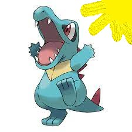

HyperBlog
Tu blog de cabecera para error modificando fix-type version 2
EL TITULO ATRACTIVO E INTERESANTE DEL POST
evoluciones de totodile

En este parrafo se van a explicar las cosas interesantes que se pueden hacer con ramas
los blogs ayudan bastante a conocer y conocer tus puntos de vista sobre cualquier tema
ahora dime ¿te gusto el BZRP de Quevedo?
Estamos probando los errores que pueden dar